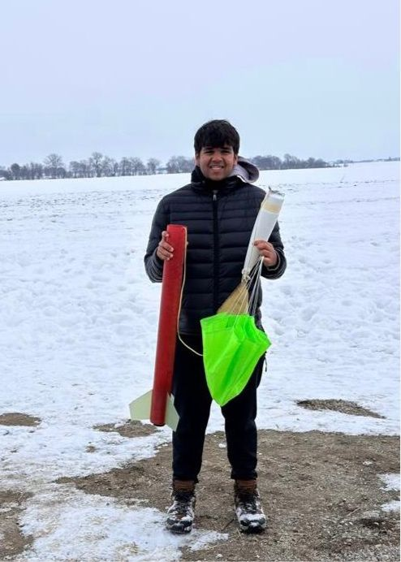
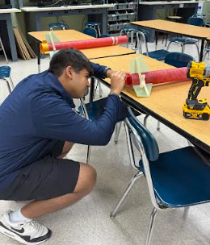
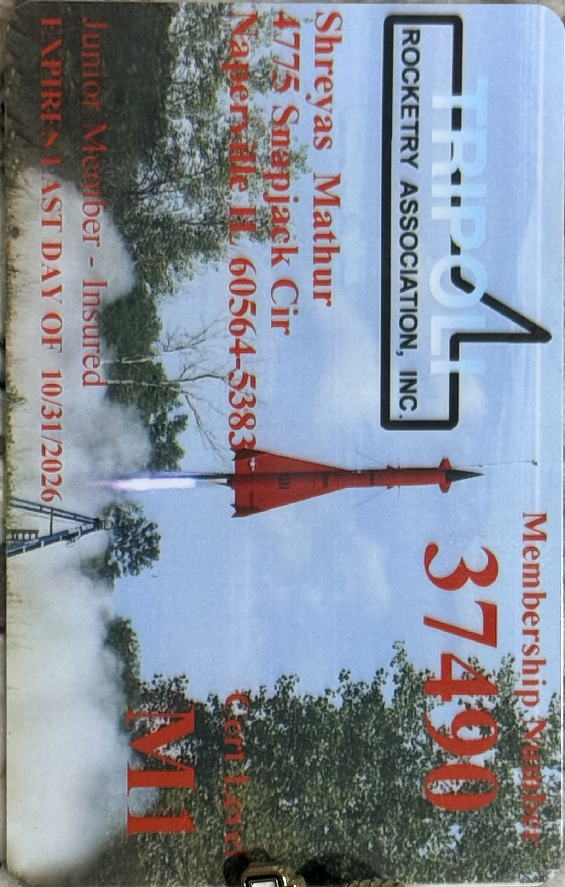

Research & Projects
Engineering Design and Leaf Removal System
PLTW Capstone Project
I designed a leaf removal system to cut down on the physical strain and time that seasonal cleanup usually takes. The project followed the full engineering design process, from identifying the problem and setting design criteria to market research, prototyping, and testing.
After building a working prototype, I tested it and used those results, along with feedback from engineering professionals, to refine the design.
I also presented the work at key checkpoints, including the project proposal, Preliminary Design Review, and final presentation, while consulting professionals throughout development.
More information and detailed reports →The Effect of Airfoil Thickness on Fuel Consumption in Flight
Published in October 2025 issue of Curieux Academic Journal
I conducted independent research analyzing how airfoil thickness affects the fuel efficiency of passenger aircraft using wind tunnel experiments and NASA simulation software. To strengthen my work, I consulted with aerospace industry professionals who helped me refine my experimental methods and validate my findings.


Tripoli Rocketry Association: Level 1 High Power Rocketry Certification
Built a high-precision Wildman Journey 75 rocket, pursuing the Tripoli Level 1 High-Power Rocketry Certification as a step toward advanced aerospace goals. Assembled every component—from the airframe and motor mount to the recovery system—ensuring structural integrity and aerodynamic balance. Successfully completed the certification exam, marking a key milestone toward my advanced aerospace goals.



SnapTrash
Developed SnapTrash, an AI-powered waste management app for the 2023 Congressional App Challenge. Built with MIT App Inventor, using computer vision to identify items from photos or barcodes and directs users to the correct bin, making recycling effortless.